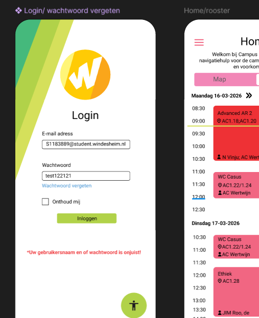

Over dit project
Voor de hackathon heb ik gewerkt aan het ontwerpen van een mobiele applicatie die studenten ondersteunt bij het navigeren over de campus. Het doel van de app was om studenten snel en eenvoudig de juiste route naar lokalen, gebouwen en andere belangrijke plekken te laten vinden.
De focus lag op gebruiksvriendelijkheid, overzicht en snelheid. Studenten moeten onderweg zonder moeite kunnen zien waar zij heen moeten, hoeveel tijd de route kost en welke richting zij op moeten. Daarmee speelt de applicatie in op een herkenbaar probleem: verdwalen of te laat komen doordat gebouwen en lokalen lastig te vinden zijn.
Mijn rol
Binnen dit project heb ik gewerkt aan zowel het ontwerp als de visuele uitwerking van de applicatie. Ik heb nagedacht over de gebruikersflow, de opbouw van de schermen en de visuele hiërarchie binnen de interface.
Daarnaast heb ik gekeken naar hoe studenten zo snel mogelijk hun bestemming kunnen invoeren, een route kunnen bekijken en extra informatie over locaties kunnen vinden. Hierbij stond een intuïtieve mobiele ervaring centraal, zodat de app direct bruikbaar is wanneer een student onderweg is naar een les of afspraak.
User flow
De gebruikersflow is ontworpen om kort en logisch te blijven. De gebruiker opent de app, zoekt of selecteert een bestemming, bekijkt de voorgestelde route en volgt vervolgens de aanwijzingen naar het juiste lokaal of gebouw. Belangrijke informatie, zoals route, reistijd en locatie, wordt direct zichtbaar gemaakt.
Ontwerpproces
Het ontwerpproces begon met het maken van low-fidelity wireframes. In deze fase lag de focus op de basisstructuur van de app, de schermindeling en de belangrijkste interacties. Hierbij werd vooral gekeken naar eenvoud en duidelijkheid, omdat gebruikers de app vaak snel en onderweg moeten gebruiken.
Daarna is het concept verder uitgewerkt tot een high-fidelity prototype in Figma. In deze fase zijn kleurgebruik, typografie en visuele details toegevoegd om de app een herkenbare en consistente uitstraling te geven.

Testen en iteraties
Tijdens het testen is gekeken of gebruikers snel konden begrijpen hoe zij een bestemming konden vinden en hoe duidelijk de route werd weergegeven. Uit feedback bleek dat studenten vooral behoefte hebben aan directe informatie en een eenvoudige interface zonder onnodige stappen.
Op basis van deze bevindingen is het ontwerp aangepast door de zoekfunctie duidelijker te maken, route-informatie prominenter te tonen en belangrijke knoppen beter zichtbaar in de interface te plaatsen.
Belangrijkste functionaliteiten
- Zoeken naar gebouwen, lokalen en andere campuslocaties
- Duidelijke routeweergave naar de gekozen bestemming
- Inzicht in reistijd en afstand
- Mobielvriendelijke interface voor gebruik onderweg
- Overzicht van belangrijke locaties op de campus
Uitdagingen & leerpunten
Een belangrijke uitdaging binnen dit project was het vertalen van een routeprobleem naar een duidelijke mobiele interface. Gebruikers willen onderweg snel begrijpen waar zij heen moeten, zonder te veel informatie tegelijk te zien.
Tijdens het ontwerpproces heb ik geleerd hoe belangrijk het is om informatie te prioriteren. Niet alles hoeft tegelijk in beeld te staan. Door te werken met een duidelijke hiërarchie, overzichtelijke schermen en logische interacties wordt de app rustiger en gebruiksvriendelijker.
Eindresultaat
Het eindresultaat is een interactief prototype van een mobiele applicatie die studenten helpt om sneller hun weg te vinden op de campus. Het ontwerp is uitgewerkt in Figma en laat de belangrijkste gebruikersflows en schermen van de route-app zien.
Bekijk het Figma prototype Bekijk de live demoGebruikersnaam: jeremy@windesheim.nl
Wachtwoord: Hallo123
Reflectie
Tijdens dit project heb ik ervaren hoe belangrijk het is om een alledaags probleem vanuit de gebruiker te bekijken. Voor studenten lijkt het misschien klein om een lokaal niet meteen te kunnen vinden, maar in de praktijk kan dit zorgen voor stress, verwarring en te laat komen.
Daarnaast heb ik geleerd hoe belangrijk eenvoud is in een mobiele interface. Omdat gebruikers deze app onderweg gebruiken, moet de informatie direct duidelijk zijn en moeten acties vanzelfsprekend aanvoelen. Door te focussen op een korte gebruikersflow en sterke visuele hiërarchie werd het ontwerp overzichtelijker.
Met meer tijd zou ik het concept verder uitwerken met uitgebreidere gebruikerstests en mogelijk extra functies toevoegen, zoals live locatie, verdiepingsoverzichten of persoonlijke route-aanbevelingen.